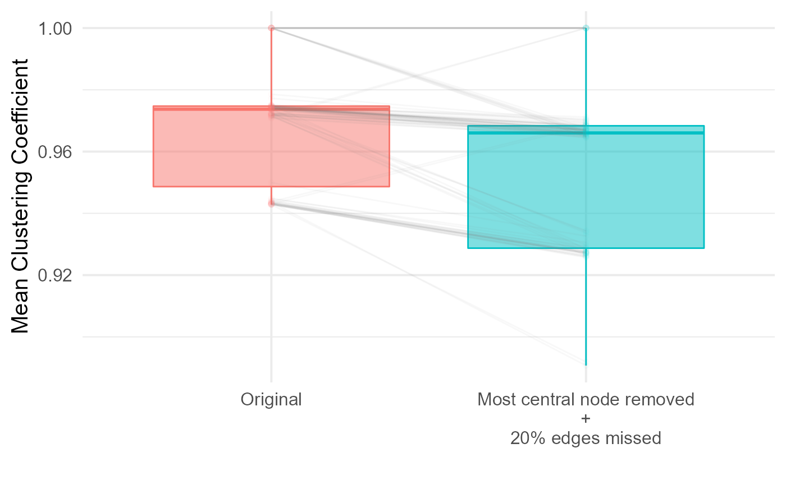

Let’s first generate a theoretical simulation:
library(SimuNet)
library(magrittr)
set.seed(42)
n <- 5L
samp.effort <- 100L
Adj <- sample(1:samp.effort,n * n) |>
matrix(nrow = n,dimnames = list(letters[1:n],letters[1:n]))
Adj[lower.tri(Adj,diag = TRUE)] <- 0L
Adj
#> a b c d e
#> a 0 100 37 27 58
#> b 0 0 20 36 42
#> c 0 0 0 5 93
#> d 0 0 0 0 30
#> e 0 0 0 0 0
sL <- simunet(Adj,samp.effort,"upper",10)
sL
#>
#> scan: 1
#> a . 1 1 . 1
#> b . . . . .
#> c . . . . 1
#> d . . . . .
#> e . . . . .
#>
#> scan: 2
#> a . 1 . . .
#> b . . . . 1
#> c . . . . 1
#> d . . . . .
#> e . . . . .
#>
#> ... ( 7 more scans)
#>
#> scan: 10
#> a . 1 . 1 1
#> b . . . . .
#> c . . . . 1
#> d . . . . .
#> e . . . . .
#>
#>
#> Hidden attributes:
#> scanList.type - raw.scanList - Adj - samp.effort - n.scans - mode
#> Adj.subfun - edge.ProbExperimental designs - expDesign objects in SimuNet - are successions of manipulations that are applied to a scanList, i.e. a 3-dimensional array.
To design an experiment, simply input functions as successive arguments of design_exp():
my_fun1 <- function(scan.list) {
# do things on scan.list
scan.list
}
my_fun2 <- function(scan.list) {
# do other things on scan.list
scan.list
}
design_exp(my_fun1,remove_mostCentral,my_fun2)
#> Theoretical scanList ->
#> ------------
#> my_fun1 ->
#> remove_mostCentral ->
#> my_fun2 ->
#> ------------
#> empirical scanList
#>
#> See `$FUN.seq` for the functions source code.You can store design_exp()’s output and apply it to scanList via perform_exp().
An expDesign can be expanded by inputting it in design_exp() with other functions or expDesign.
eD1 <- design_exp(my_fun1,remove_mostCentral)
design_exp(eD1,my_fun2) # this is similar to...
#> Theoretical scanList ->
#> ------------
#> my_fun1 ->
#> remove_mostCentral ->
#> my_fun2 ->
#> ------------
#> empirical scanList
#>
#> See `$FUN.seq` for the functions source code.
# ... this:
design_exp(my_fun1,remove_mostCentral,my_fun2)
#> Theoretical scanList ->
#> ------------
#> my_fun1 ->
#> remove_mostCentral ->
#> my_fun2 ->
#> ------------
#> empirical scanList
#>
#> See `$FUN.seq` for the functions source code.Since design_sampling() also returns expDesign objects, this is how one can include a sampling method within an experimental design:
design_exp(my_fun1,design_sampling("group",0.9))
#> Theoretical scanList ->
#> ------------
#> my_fun1 ->
#> group-scan sampling: constant ->
#> ------------
#> empirical scanList
#>
#> See `$FUN.seq` for the functions source code.
foc.even <- design_sampling("focal","even")
foc.even
#> Theoretical scanList ->
#> ------------
#> focal-scan sampling: even ->
#> ------------
#> empirical scanList
#>
#> See `$FUN.seq` for the functions source code.
design_exp(my_fun2,foc.even,my_fun1)
#> Theoretical scanList ->
#> ------------
#> my_fun2 ->
#> focal-scan sampling: even ->
#> my_fun1 ->
#> ------------
#> empirical scanList
#>
#> See `$FUN.seq` for the functions source code.design_exp() uses purrr’s purrr::compose() to encapsulate the sequence of manipulations into a single function stored as FUN.seq in the expDesign object, to be applied to the scanList.
Manipulation “building blocks” are included in SimuNet to be used in experimental designs, but users should feel free to create their own functions to use in a sequence.
WIP: SimuNet is planned to later include a feature to automatically carry the scanList’s attribute along the sequence manipulations, whether they include user-defined functions or not. In the meantime, copy_attrs_to(from,to) allows for instance to copy attrs from an original scanList to its modified version.
Let’s try out a concrete example: say you want to assess how would the adjacency matrix be affected if the overall most central node had not been there (but nothing else would have changed).
remove_mostCentral() does just that, and can be included alone or in combination in an expDesign. Let’s look at its code:
getS3method("remove_mostCentral","scanList") # for convenience reasons, SimuNet's building blocks
#> function (scan.list, ...)
#> {
#> mode <- attrs(scan.list, "mode")
#> directed <- switch(mode, directed = TRUE, FALSE)
#> copy_attrs_to(which.max(igraph::eigen_centrality(igraph::graph.adjacency(sum_scans(scan.list),
#> weighted = TRUE), directed = directed) %>% .$vector) %>%
#> {
#> scan.list[-c(.), -c(.), ]
#> }, from = scan.list)
#> }
#> <bytecode: 0x000000001b2ba1b8>
#> <environment: namespace:SimuNet>
# are written as S3 methods, but this isn't requiredWe can see that it:
scanList into a weighted adjacency matrixscanList, with the copied attrs
Imagine what manipulation you too can design and use in SimuNet!
Let’s include remove_mostCentral() in its own experimental design, and apply it to sL
removeC <- design_exp(remove_mostCentral)
removeC
#> Theoretical scanList ->
#> ------------
#> remove_mostCentral ->
#> ------------
#> empirical scanList
#>
#> See `$FUN.seq` for the functions source code.
Cremoved <- sL |> perform_exp(removeC)
Cremoved
#>
#> scan: 1
#> a . 1 1 .
#> b . . . .
#> c . . . .
#> d . . . .
#>
#> scan: 2
#> a . 1 . .
#> b . . . .
#> c . . . .
#> d . . . .
#>
#> ... ( 7 more scans)
#>
#> scan: 10
#> a . 1 . 1
#> b . . . .
#> c . . . .
#> d . . . .
#>
#>
#> Hidden attributes:
#> scanList.type - raw.scanList - Adj - samp.effort - n.scans - mode
#> Adj.subfun - edge.Prob - theoretical.scanList
Cremoved |> sum_scans()
#>
#> Weighted adjacency matrix
#> a . 10 4 2
#> b . . 1 2
#> c . . . .
#> d . . . .
#>
#>
#> Hidden attributes:
#> scanList.type - raw.scanList - Adj - samp.effort - n.scans - mode
#> Adj.subfun - edge.Prob - theoretical.scanList - summed.scanList - sampledWe can see that node e was removed from all scans.
Let’s have a look at the original nodes’ centrality:
sL |>
sum_scans() |>
igraph::graph.adjacency(weighted = TRUE) |>
igraph::eigen_centrality(directed = FALSE) %>%
.$vector
#> a b c d e
#> 0.9693835 0.9305218 0.7135468 0.2997117 1.0000000as expected, e had the highest eigen-vector centrality value.
Let see for instance how this impacted the network’s clustering coefficient:
sL |>
sum_scans() %>%
{class(.) <- NULL;.} %>%
{. + t(.)} |> # DirectedClustering requires symmetrical matrices for undirected networks
DirectedClustering::ClustBCG(type = "undirected")
#> $LocalCC
#> a b c d e
#> 0.9090909 0.9500000 1.0000000 1.0000000 0.8472222
#>
#> $GlobalCC
#> [1] 0.9412626
Cremoved |>
sum_scans() %>%
{class(.) <- NULL;.} %>%
{. + t(.)} |>
DirectedClustering::ClustBCG(type = "undirected")
#> $LocalCC
#> a b c d
#> 0.8125000 0.8846154 1.0000000 1.0000000
#>
#> $GlobalCC
#> [1] 0.9242788What would have happened if, in addition to having the most central individual removed, we also missed 20% of the edges’ value when doing group-scans?
Let’s design this second experiment:
removeC2 <- design_exp(remove_mostCentral,design_sampling("group",0.8))
removeC2
#> Theoretical scanList ->
#> ------------
#> remove_mostCentral ->
#> group-scan sampling: constant ->
#> ------------
#> empirical scanList
#>
#> See `$FUN.seq` for the functions source code.
Cremoved2 <- sL |> perform_exp(removeC2)
Cremoved2
#>
#> scan: 1
#> a . 1 1 .
#> b . . . NA
#> c . . . .
#> d . . . .
#>
#> scan: 2
#> a . 1 . .
#> b . . . .
#> c . . . .
#> d . . . .
#>
#> ... ( 7 more scans)
#>
#> scan: 10
#> a . 1 NA 1
#> b . . . .
#> c . . . .
#> d . . . .
#>
#>
#> Hidden attributes:
#> scanList.type - raw.scanList - Adj - samp.effort - n.scans - mode
#> Adj.subfun - edge.Prob - obs.P - theoretical.scanList
Cremoved2 |> sum_scans()
#>
#> Weighted adjacency matrix
#> a . 8 3 2
#> b . . 1 2
#> c . . . .
#> d . . . .
#>
#>
#> Hidden attributes:
#> scanList.type - raw.scanList - Adj - samp.effort - n.scans - mode
#> Adj.subfun - edge.Prob - obs.P - theoretical.scanList - summed.scanList - sampledLet’s push further the previous example: we will replicate the design on a larger network containing more nodes:
set.seed(42)
n <- 10L
samp.effort <- 300L
Adj <- sample(1:samp.effort,n * n) |>
matrix(nrow = n,dimnames = list(letters[1:n],letters[1:n]))
Adj[lower.tri(Adj,diag = TRUE)] <- 0L
Adj
#> a b c d e f g h i j
#> a 0 165 158 262 297 101 113 100 60 112
#> b 0 0 136 130 277 220 278 42 29 72
#> c 0 0 0 3 157 248 246 239 81 219
#> d 0 0 0 0 76 238 289 91 108 254
#> e 0 0 0 0 0 69 104 13 201 166
#> f 0 0 0 0 0 0 183 181 121 1
#> g 0 0 0 0 0 0 0 54 85 141
#> h 0 0 0 0 0 0 0 0 126 133
#> i 0 0 0 0 0 0 0 0 0 216
#> j 0 0 0 0 0 0 0 0 0 0
sL <- simunet(Adj,samp.effort,"upper",100)
sL
#>
#> scan: 1
#> a . 1 . 1 1 . 1 1 . .
#> b . . . . 1 1 1 . . .
#> c . . . . 1 1 1 . . 1
#> d . . . . . 1 1 . . 1
#> e . . . . . . . . 1 1
#> f . . . . . . . . . .
#> g . . . . . . . . . 1
#> h . . . . . . . . 1 1
#> i . . . . . . . . . 1
#> j . . . . . . . . . .
#>
#> scan: 2
#> a . 1 1 1 1 . . . . 1
#> b . . . 1 1 . 1 1 . 1
#> c . . . . 1 . 1 1 . 1
#> d . . . . . 1 . . . 1
#> e . . . . . . . . . 1
#> f . . . . . . 1 . . .
#> g . . . . . . . . 1 .
#> h . . . . . . . . 1 .
#> i . . . . . . . . . 1
#> j . . . . . . . . . .
#>
#> ... ( 97 more scans)
#>
#> scan: 100
#> a . . 1 1 1 . . 1 1 .
#> b . . . . 1 1 1 . 1 .
#> c . . . . 1 1 1 1 . .
#> d . . . . . 1 1 . . 1
#> e . . . . . . . . 1 1
#> f . . . . . . . 1 1 .
#> g . . . . . . . . . .
#> h . . . . . . . . . 1
#> i . . . . . . . . . .
#> j . . . . . . . . . .
#>
#>
#> Hidden attributes:
#> scanList.type - raw.scanList - Adj - samp.effort - n.scans - mode
#> Adj.subfun - edge.ProbReplicating theoretical simulations allows to assess the clustering coefficient distribution:
get_undirectedCC <- function(scanList) {
CC <-
scanList |>
sum_scans() %>%
{class(.) <- NULL;.} %>% # modify the sumeed scanList into a class-less matrix
{. + t(.)} |> # symmetrize the triangular matrix by adding its transposed matrix
DirectedClustering::ClustBCG(type = "undirected")
CC$GlobalCC
}
# calculate the clustering coefficient from a single simulation
simunet(Adj,samp.effort,"upper",100) |> get_undirectedCC()
#> [1] 0.9715875
# Replicating the operation
CC.theo <- data.frame(type = "theoretical",
CC = replicate(100,
simunet(Adj,samp.effort,"upper",100) |>
get_undirectedCC()
)
)
summary(CC.theo)
#> type CC
#> Length:100 Min. :0.9419
#> Class :character 1st Qu.:0.9712
#> Mode :character Median :0.9739
#> Mean :0.9705
#> 3rd Qu.:0.9747
#> Max. :1.0000Let’s do the same when the most central node is removed, and 20% of the edges are missed:
# calculate the clustering coefficient from a single simulation
simunet(Adj,samp.effort,"upper",100,removeC2) |> get_undirectedCC()
#> [1] 0.934314
# Replicating the operation
CC.empi <- data.frame(type = factor(c("theoretical","empirical"),
levels = c("theoretical","empirical")
),
rep = rep(1:100,each = 2) |> as.factor(),
CC = replicate(100,simplify = FALSE, # TODO: come up with more elegant code
{
sL <- simunet(Adj,samp.effort,"upper",100,removeC2)
CC.theo <- sL$theoretical.scanList |> get_undirectedCC()
CC.empi <- sL |> get_undirectedCC()
c(CC.theo,CC.empi)
}
) |> do.call(what = c)
)
summary(CC.empi)
#> type rep CC
#> theoretical:100 1 : 2 Min. :0.8907
#> empirical :100 2 : 2 1st Qu.:0.9435
#> 3 : 2 Median :0.9683
#> 4 : 2 Mean :0.9637
#> 5 : 2 3rd Qu.:0.9742
#> 6 : 2 Max. :1.0000
#> (Other):188
library(ggplot2)
CC.empi |>
ggplot(aes(type,CC,colour = type,fill = type))+
geom_boxplot(alpha = .5)+
geom_line(aes(group = rep),alpha = 0.05,colour = "grey50")+
geom_point(alpha = 0.02)+
guides(fill = "none",colour = "none")+
scale_x_discrete(labels = c("Original","Most central node removed\n+\n20% edges missed"))+
labs(x = "",y = "Mean Clustering Coefficient")+
theme_minimal(15)+
theme(plot.background = element_rect(fill = 'white', colour = NA))
As seen above, combining SimuNet’s experimental design approach in combination with R’s replicate() (or lapply()/sapply() to allow handling of the replication index) allows for varied and customized collection of simulated data!
SimuNet includes some helper functions to convert objects to fit your needs.
These helper functions include:
scanList2matList(): convert a scanList 3D array into an R list of 2D matricesmatList2scanList(): does the opposite as scanList2matList()
igraph::graph.adjacency() - you can use flexibly many network manipulations in your experimental design!Let’s implement manipulations to apply on a list of matrices:
# This function mask a random node from a matrix
mask_randomNode <- function(Adj) {
to.mask <- sample(1:nrow(Adj),1)
Adj[c(to.mask),] <- NA
Adj[,c(to.mask)] <- NA
Adj
}
# a scanList can be transformed to a list of matrices, and lapply can be used to apply
# mask_randomNode to each. matList2scanList back transforms it:
mask_inEachScan <- function(sL) {
mL <- scanList2matList(sL)
mL |>
lapply(mask_randomNode) |>
copy_attrs_to(from = mL) |> # keeps track of sL's attributes
matList2scanList()
}
rand.mask <- design_exp(mask_inEachScan)
rand.mask
#> Theoretical scanList ->
#> ------------
#> mask_inEachScan ->
#> ------------
#> empirical scanList
#>
#> See `$FUN.seq` for the functions source code.
sL |> perform_exp(rand.mask)
#>
#> scan: 1
#> a . 1 . NA 1 . 1 1 . .
#> b . . . NA 1 1 1 . . .
#> c . . . NA 1 1 1 . . 1
#> d NA NA NA NA NA NA NA NA NA NA
#> e . . . NA . . . . 1 1
#> f . . . NA . . . . . .
#> g . . . NA . . . . . 1
#> h . . . NA . . . . 1 1
#> i . . . NA . . . . . 1
#> j . . . NA . . . . . .
#>
#> scan: 2
#> a . 1 1 1 1 NA . . . 1
#> b . . . 1 1 NA 1 1 . 1
#> c . . . . 1 NA 1 1 . 1
#> d . . . . . NA . . . 1
#> e . . . . . NA . . . 1
#> f NA NA NA NA NA NA NA NA NA NA
#> g . . . . . NA . . 1 .
#> h . . . . . NA . . 1 .
#> i . . . . . NA . . . 1
#> j . . . . . NA . . . .
#>
#> ... ( 97 more scans)
#>
#> scan: 100
#> a . . 1 1 1 NA . 1 1 .
#> b . . . . 1 NA 1 . 1 .
#> c . . . . 1 NA 1 1 . .
#> d . . . . . NA 1 . . 1
#> e . . . . . NA . . 1 1
#> f NA NA NA NA NA NA NA NA NA NA
#> g . . . . . NA . . . .
#> h . . . . . NA . . . 1
#> i . . . . . NA . . . .
#> j . . . . . NA . . . .
#>
#>
#> Hidden attributes:
#> scanList.type - raw.scanList - Adj - samp.effort - n.scans - mode
#> Adj.subfun - edge.Prob - theoretical.scanListLet’s see with another example relying on igraph networks:
# This function mask a random node from a matrix
rewire_each <- function(sL) {
mode <- sL$mode
sLapply( # wrapper for lapply over scanLists' 3rd dimension. See ?sLapply
sL,
function(scan) {
scan |>
igraph::graph.adjacency(mode = mode,weighted = TRUE) |> # transform to igraph network
igraph::rewire(igraph::each_edge(p = .2, loops = FALSE)) |> # rewire networks
igraph::get.adjacency(type = "upper",sparse = FALSE) # transform back to matrix
}
)
}
rand.rewire <- design_exp(rewire_each)
rand.rewire
#> Theoretical scanList ->
#> ------------
#> rewire_each ->
#> ------------
#> empirical scanList
#>
#> See `$FUN.seq` for the functions source code.
rewired <- sL |> perform_exp(rand.rewire)
sL[,,3:4]
#>
#> scan: 1
#> a . . 1 1 1 1 . . . 1
#> b . . . 1 1 . 1 . 1 1
#> c . . . . . 1 1 1 . 1
#> d . . . . . 1 1 . . 1
#> e . . . . . . 1 1 1 1
#> f . . . . . . 1 . . .
#> g . . . . . . . . 1 .
#> h . . . . . . . . . .
#> i . . . . . . . . . 1
#> j . . . . . . . . . .
#>
#> scan: 2
#> a . 1 . 1 1 . . 1 . .
#> b . . 1 1 1 . 1 . . .
#> c . . . . . 1 1 . . 1
#> d . . . . . . 1 . . .
#> e . . . . . 1 . . 1 .
#> f . . . . . . 1 1 . .
#> g . . . . . . . . 1 .
#> h . . . . . . . . . .
#> i . . . . . . . . . 1
#> j . . . . . . . . . .
#>
#>
#> Hidden attributes:
#> scanList.type - raw.scanList - Adj - samp.effort - n.scans - mode
#> Adj.subfun - edge.Prob
rewired[,,3:4]
#>
#> scan: 1
#> a . . 1 1 1 1 . . . 1
#> b . . . 1 1 . 1 . 1 1
#> c . . . 1 . 1 1 1 . 1
#> d . . . . 1 . 1 1 . .
#> e . . . . . 1 . 1 1 .
#> f . . . . . . 1 . . .
#> g . . . . . . . . . .
#> h . . . . . . . . 1 .
#> i . . . . . . . . . 1
#> j . . . . . . . . . .
#>
#> scan: 2
#> a . . . 1 . . . 1 . 1
#> b . . 1 . 1 . 1 1 . .
#> c . . . . . 1 1 . . 1
#> d . . . . . . 1 1 . .
#> e . . . . . . . . 1 1
#> f . . . . . . . 1 1 .
#> g . . . . . . . . 1 .
#> h . . . . . . . . . .
#> i . . . . . . . . . 1
#> j . . . . . . . . . .
#>
#>
#> Hidden attributes:
#> scanList.type - raw.scanList - Adj - samp.effort - n.scans - mode
#> Adj.subfun - edge.Prob - theoretical.scanList